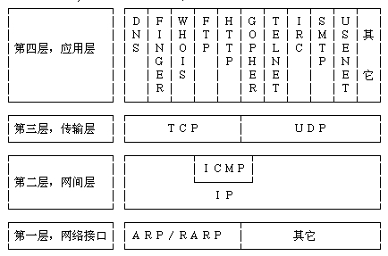
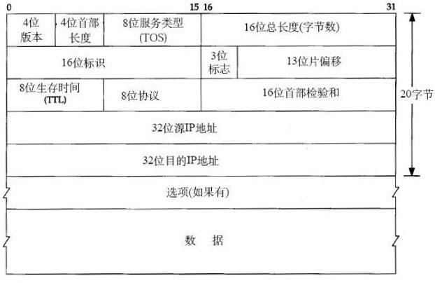
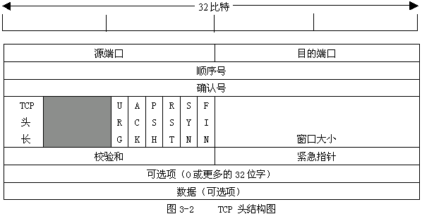

4层网络模型常见协议： 
IP头部： 
TCP头部： 
以太头定义：
#ifndef LITTLE_ENDIAN
#define LITTLE_ENDIAN (1) //BYTE ORDER
#else
#error Redefine LITTLE_ORDER
#endif
//Mac头部，总长度14字节
typedef struct _eth_hdr
{
unsigned char dstmac[6]; //目标mac地址
unsigned char srcmac[6]; //源mac地址
unsigned short eth_type; //以太网类型
}eth_hdr;
//arp
typedef struct arphdr
{
u_short ar_hrd;
u_short ar_pro;
u_char ar_hln;
u_char ar_pln;
u_short ar_op;
}ARP_HEADER;
//IP头部，总长度20字节
typedef struct _ip_hdr
{
#if LITTLE_ENDIAN
unsigned char ihl:4; //首部长度
unsigned char version:4, //版本
#else
unsigned char version:4, //版本
unsigned char ihl:4; //首部长度
#endif
unsigned char tos; //服务类型
unsigned short tot_len; //总长度
unsigned short id; //标志
unsigned short frag_off; //分片偏移
unsigned char ttl; //生存时间
unsigned char protocol; //协议
unsigned short chk_sum; //检验和
struct in_addr srcaddr; //源IP地址
struct in_addr dstaddr; //目的IP地址
}ip_hdr;
//TCP头部，总长度20字节
typedef struct _tcp_hdr
{
unsigned short src_port; //源端口号
unsigned short dst_port; //目的端口号
unsigned int seq_no; //序列号
unsigned int ack_no; //确认号
#if LITTLE_ENDIAN
unsigned char reserved_1:4; //保留6位中的4位首部长度
unsigned char thl:4; //tcp头部长度
unsigned char flag:6; //6位标志
unsigned char reseverd_2:2; //保留6位中的2位
#else
unsigned char thl:4; //tcp头部长度
unsigned char reserved_1:4; //保留6位中的4位首部长度
unsigned char reseverd_2:2; //保留6位中的2位
unsigned char flag:6; //6位标志
#endif
unsigned short wnd_size; //16位窗口大小
unsigned short chk_sum; //16位TCP检验和
unsigned short urgt_p; //16为紧急指针
}tcp_hdr;
//UDP头部，总长度8字节
typedef struct _udp_hdr
{
unsigned short src_port; //远端口号
unsigned short dst_port; //目的端口号
unsigned short uhl; //udp头部长度
unsigned short chk_sum; //16位udp检验和
}udp_hdr;
//ICMP头部，总长度4字节
typedef struct _icmp_hdr
{
unsigned char icmp_type; //类型
unsigned char code; //代码
unsigned short chk_sum; //16位检验和
}icmp_hdr;